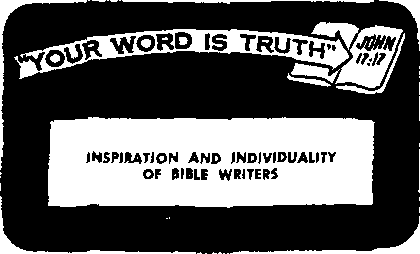

PAGE 5
Christian Conscience and the State
PAGE7 16
Aiding the African People in a Time of Change
PAGE ao
AUGUST 8, 1963
THE MISSION OF THIS JOURNAL
Nftwt sources that are able to keep you awake to the vital issues of times must be unfettered by censorship and selfish interests. "Awake!’' has no fetters. Jt recognizes facts, faces facts, is free to publish facts* It is not bound by political ambitions or obligations; it is unhampered by advertisers whose toes must not be trodden on; it is unprejudiced by traditional creeds. This journal keeps itself free that it may speak freely to you. But it does not obuse its freedom. It maintains integrity to truth.
“Awake!” uses the regular news channels, but is ndt dependent on them. Its own correspondents are on all continents, In scores of nations. From the four corners of the eorth their uncensored, on-the-scenes reports come to you through these columns. This journal's viewpoint is not narrow, but is international. It is read in many nations, <n many languagest by persons of all ages. Through its pages many fields of knowledge pass in review—government, commerce, religion, history, geography, science, social conditions, natural wohders—why, its cover’ age is as broad as the earth and as high as the heavens.
"Awake!" pledges itself to righteous principles, to,exposing hidden foes ond subtle dangers, to championing freedom for all, to comforting mourners and strengthening those disheartened by the failures of a delinquent world, reflecting sure hope for the establishment of a righteous New World.
Get acquainted with "Awake!” Keep awake by reading "Awake!”
PVBLl&TTEP SIMULTANEOUSLY IN THE UNITED STATES BY THE WATCHTOWER BIBLE AND TRACT SOCIETY OF NEW YORK. INC, 117 Adams Street Brooklyn 1, N. Y., U. S* A.
and in England by
WATCH TOWER BIBLE Watch Tower House, The Ridgeway N. H* Knohh, President
Printing this issue: 3,800,000 s
“Awake!” I* poblhhed in the following 25 languages:
—Afrjtaane, CtnyaidJu Danish, Dutch, English, Finnish, FYcnch, GernldJi. Qreefr, Ztalten, Nfirwegian. Prirtuguesf!, S|iarti«h, Swedish, Ta pick. Ziulll-Monthly—Cehu-Vlsayau, Chintz, lloeaiih, Korean, Malayalam, Polish, Tamil, Ukrainian.
Yearly mibsrrlptitm rates
Oflott fur scmtnioiitlily editions
Amerha, U.S., 11? Adams SL, Brooklyn I, N.Y. $1 Australia, 11 Boresfard Rd,, Stratl)fl«lil, N.S.W.
Canada, 150 Bridgelanfl Ave., Toronto in, Ont. SI England, WaLch Tower
New Zealand, 621 New North Rd,. AuckUftd, S.W. 1
Sonth Africa. Private 2, P.O EUndsfnnleiti. Tvl. 70c Monthly eilltLouij coat half the above rates.
AND TRACT SOCIETY
London N.W, 7, England Grant Suiter, Secretary
i copy (Australia, 5d; South Africa, 3'/2c) Remittances for siibsiripf.ioiu -should he sent tn the office in your country. Other-Wife’ Kend your remittance to Uli titwri. of enrfmffun ft sent at least two fairies before subscription expire*.
CHANGES Or ADDRESS should reach us thirty days before your moving date. Give us your old and new iddrus <if (Maslble. ymtr old address fatal). Write Watch Tower, Watch Tower House. The Ririgmy. London N.W. 7. England.
Entered as second-class matter at Rronklyn, >' y. Printed in England
Tta filfele IraBjJatloD dmJ Jjj “A watai” is fbr >ew Trsnsiaiio!} of the Jfofy Stfiftwos, 2962 ettttoa When other translations are used the following symbols will appear bcfclnd the citations:
AiS1 - Ajtierteaii rflandard Version AT - Au A tn er J-ch] j Translation AV - Authrfrized Vcrshitt 11611) Da - J. N. Darby's version
Dy — Catholic Dotiay verminn ED - The Emphatic Diajjlotl. JP - Jewish publication line. Le - Imbc Leeper^ version
Mo - James Moffatt's verrinn Rd J. B, Rotherham's version KS - Revised Standard Version ¥(7 - Robert Young’s version
CONTENTS
it is Acceptable According to What
You Have 3
Is Liberia Losing Its “Love of Liberty"? 5 A Test of the Guarantee
of Religious Liberty 15
Christian Conscience and the State 16
Aiding the African People in a Time of Change
The Underwater World of the Skin Diver
“Your Word Is Truth”
Inspiration and Individuality of Bible Writers 28
Watching the World
—Luke 21:1-4.
This principle, so com-
WHAT an inexhaustible storehouse the Bible is; filled with history and prophecy, righteous laws and principles! And how well its principles enlighten and guide; on the one hand encouraging you, and on the other hand keeping you humble, just as the need may be. Truly it is a lamp to your feet.—Ps. 119:105.
Among its principles that serve the dual purpose of encouraging you and keeping you humble is the one that your gift or contribution is ‘acceptable according to what you have and not according to what you do not have.’ (2 Cor. 8:12) In other words, God takes into consideration your drcnmatances. Thus in ancient Israel offerings were graded according to ability to give, such as a lamb, or two pigeons or some fine flour. The offering that Jesus’ mother and foster father brought at the time they presented him at the temple indicates that they were poor.—Lev. 5:5-12; 12:8; Luke 2:24.
Jesus Christ made the same point when once he saw “a certain needy widow drop two small coins of very little value" into the temple treasury chest. Seemingly she gave the least, but Jesus said she actually gave the most, for she gave all she had.
forting to the poor and lowly, at the same time teaches humility to the rich and mighty, robbing them of any grounds for smugness or pride. For their gifts to be acceptable., these also have to be according to what they have. So while lavish gifts may make the headlines in the newspapers, their size does not in itself make them more meritorious.
Yes, how differently God views things from the way man does! Men often look solely at the size of the gift, but God sees the amount of unselfishness it represents. Therein lies the weakness of the required tithe. Under present unequal economic con-person Tt represents a mere trifle, no indication at all that the giver loves God with all his heart, mind, soul and strength, while for another person it may represent a burden almost too grievous to be borne.
However, while taking comfort in the obvious lesson of this principle that your contributions are acceptable according to what you have, there are two related aspects that you do well not to overlook. Do not content yourself with giving little when with effort you might be able to make progress, to do better. Rather, view your limitations as obstacles to be surmounted if at all possible. For example, there was the seventeenth-century English poet, John Milton. Rightly he asked, because of his blindness, “Does God exact day-labor, light denied?’’ Still the fact was that he did all his best-known work after he became blind, including his Treatise on Christian Doctrine Compiled from the Holy Scriptures Alone, in which, interestingly, he marshals the testimony of the Scriptures and reason to disprove the doctrine of the trinity.
Likewise today, among the many thousands of full-time or pioneer Christian ministers of Jehovah’s witnesses serving throughout the world are some who are totally blind, others who are stone deaf and others who are crippled. They have not resigned themselves to a life of inactivity because of their handicaps but are determined to do all they can in spite of them.
The other related aspect to bear in mind in connection with the principle that ‘it is acceptable according to what you have’ is that of you yourself being cognizant of this principle in your dealings with others. In this respect, as in so many others, human creatures ought to “become imitators of God, as beloved children,”—Eph. 5:1.
What a different world this would be if all who professed to believe in God would imitate him in the application of this principle! According to doctors, many an ambitious wife has sent her husband to an untimely grave because of goading him on so that they could keep up with the Joneses, without taking into consideration his health or his earning capacity, expecting more than he was able to give.
Not that husbands are always faultless. Often they show themselves to be unreasonable by falling to take into consideration their wives’ limitations, whatever these may be, physical, mental or emotional, Well, therefore, does the apostle Peter, a married man, counsel: “You husbands, continue dwelling in like manner with them according to knowledge, assigning them honor as to a weaker vessel, the feminine one.” Doing so, however, not begrudgingly, nor “rubbing it in," as it were, but in a loving, considerate and tactful manner, makihg for mutual happiness. —1 Pet 3:7.
The same principle applies to all other relations, whether they involve headship, such as a schoolteacher, a shop foreman or overseer of a Christian congregation, or relations between fellow employees or brothers and sisters in a family. Due to heredity or environment the abilities or capacities of individuals differ. Parents, in dealing with your children do not expect the same skill or the same response from each of your children. On the other hand, you teen-agers, do not make unfavorable comparisons between your parents and the parents of others, overlooking limiting circumstances. Be appreciative of the love your parents show and content with what they are able to provide for you.
Truly, the Bible is a fine guide. Its principle that with God your contributions, be they of service or of a monetary nature, are acceptable according to what you have is far-reaching. It serves to comfort and uplift the lowly and to deprive the more favored' ones of any grounds for pride. However, you may not view this loving and merciful principle as an excuse not to try to improve and increase. Why not? Because at the same time there is the obligation for all to apply this fine principle of acceptableness according to what one has in their dealings with others, not expecting more than they are able to give but appreciating their doing the best they can under the circumstances.
4 LIBERIA
ibe
upo
brought us here"
—this is the motto of the government seal of Liberia, a republic on the west coast of Africa. The name Liberia was coined. from the Latin word liber, meaning “free.” Liberia has thus long had an interest in lib-.
erty; in fact, it was settled by freed slaves from the United States, being founded in 1822 through the efforts of the American Colonization Society. It declared its independence July 26, 1847, and was set up as the only Negro Republic in Africa. Its constitution, similar to that of the United States of America, provides lor religious liberty, so men can worship “according to the dictates of their own conscience.”
Is that the kind of religious liberty Liberia still stands for? That is a pressing question, since it becomes necessary to present some shocking facts to the people and nations of the world. The public in general may judge for themselves whether Liberia is losing its "love of liberty."
What has recently happened in Liberia, it should be noted, hardly reflects the sen-timerit of the people in general, who number some 2,500,000 persons. Most Liberians see the need for religious liberty, for the country itself is made up more than twenty aboriginal tribes, with its own language, customs and religious attitudes. Moreover, the English-speaking Americo-Liberians, descendants mainly of American Negroes who had been freed, should want religious liberty. As the ruling class in Liberia, the Americo-Liberians have great responsibility.
f responsibility for what happens in a regarding religious liberty falls the shoulders of its chief executive, ident William V. S. Tubman. He was in 1895 at Harper, in southeast Li-ria, and was educated in the mission ci IjkftxviL frA Vj 'unfftfi Vue ountry’s leading lawyers. In 1937 he be-me an associate justice of the Supreme
being a churches.
Court, and from the bench of that tribunal he came to the presidency in January, 1944. President Tubman has not only a judicial background but also a religious one, since he is a lay preacher in the Methodist Conference, taking a leading part in such church conferences and frequent speaker at different
With President Tubman’s interest in the Bible and religion, it must have come as a surprise to many persons when news reports appeared throughout the world, such as the “UPI” report from Monrovia, Liberia, in newspapers such as the Houston (Texas) Chronicle of February 18, 1963:
‘ 'Fifty Je hov ah’s Wi tnesse s reported 1 y have been arrested, tor refusing, tn saJuift a. Uihe, rkn flag. The incident occurred when Pres-idem William Tubman asked a local leader of the sect if he and his followers refuse to salute the flag on religious grounds, according to reports,”
The news item continues, to state that the president ordered a flag-raising ceremony to be performed. The Witnesses were arrested because on religious, not political grounds, they could not conscientiously salute the emblem.1 They were taken to prison, stripped naked, beaten and robbed that night. The incident before the flag was witnessed by both local officials and foreign diplomats attending the Unification Conference.
Also, in February of this year, L. A. Remmie, a citizen of Sierra Leone and missionary working in Lower Buchanan in Liberia, was ordered by the superintendent of Grand Bassa County to stop his Christian preaching activity. On the twenty-eighth of that month Remmie was arrested and brought before President Tubman at the superintendent’s house, where he was called on to explain his attitude toward the national flag. Newspapers and the radio later reported that on that occasion Remmie called the flag a "mere piece of cloth,” but those reports are not true. Jehovah’s witnesses, wherever they are in the world, never refer to any flag in such disrespectful terms.
Since Remmie, who is a Sierra Leonian, would not agree to salute the Liberian flag, the president ordered that he be deported. He was turned over to the soldiers, who beat him and denied him food for three days. When he was transferred to Monrovia for deportation he was thrown into a dungeon where the floor was covered with human excrement. After representations by the ambassador of Sierra Leone he was moved to a hospital for treatment, though even there he was given no food except what his wife was able to bring daily. Finally, on March 25 he was deported.
Meanwhile, plans were completed for the regular annual Christian assembly of Jehovah’s witnesses, to be held at Gbarnga, in the center of Liberia, about 130 miles from the capital, Monrovia. The date was March 8-10, 1963. The Department of Justice had given permission for the assembly to be held, and District Commissioner Samuel B. Cooper agreed to cooperate, even to free lodging at his home for several assembly delegates.
By March 8 booths had been constructed for the assembly, and programs would be in the English, Pele, Kisi and Bassa languages. On Friday, March 8, Witnesses arrived at the assembly from all over Liberia, the opening attendance being well over 300. Saturday evening M. G. Henschel, a director of the Watch Tower Bible and Tract Society of Pennsylvania, U.S.A., on a visit to Liberia and a tour of Africa, delivered a Bible talk, to the delight of the assembly.
By Sunday there were about 400 persons present, including a number of interested persons from the town of Gbarnga. On Sunday morning the Bible text for the day, March 10, was discussed; it was from James 5:10: ‘‘Brothers, take as a pattern of the suffering of evil and the exercising of patience the prophets, who spoke in the name of Jehovah.” It was to prove a most appropriate text for what was to follow.
About 10:30 a.m., while the assembled Christians were listening to the talk ‘'llold-ing Faith and a Good Conscience,” a Lieutenant Warner of the local military post came to the assembly ground with a letter from District Commissioner Cooper. It ordered the entire assembly, which at the time was in the midst of a religious service, to break up and those in attendance to proceed to the District Compound “where they shall pay allegiance to the flag of the Republic of Liberia,’’
M. G. Henschel, the Society’s representative from Brooklyn, New York, and two other Witnesses then left the assembly to see the district commissioner, Henschel explained that the American ambassador had requested an appointment to speak with President Tubman; he appealed to Commissioner Cooper to suspend any action till the matter had been talked over with the president. It was explained why Jehovah’s witnesses take the position they do, regarding their not paying allegiance to the emblems of any nation, since they regard it as a violation of Bible principles. But the district commissioner refused to suspend the order. He then ordered soldiers to bring everyone at the assembly to the compound. He -also took the names of the three Christian ministers who had spoken to kirct sa?A V* a ra
dio message for Monrovia.
The soldiers arrived in a truck- They broke up the peaceful assembly, rounding up everyone, men, women and children. The group of about 400 persons were marched to the compound through the center of town. Henschel and the other Witnesses who had tried to reason with the district commissioner had rejoined the group arid walked vAVn Them through the streets. While walking, the group sang Kingdom songs of praise to Jehovah God. People came from far and near. Foreigners took pictures. Africans looked on in amazement. Soldiers shouted: “Keep quiet; stop singing.’’
Upon arrival at the military compound, the four hundred persons, men, women and children, were lined up in a circle around the flagpole, with the foreigners in front. Representatives from the press were taking pictures. Lieutenant Warner informed these Christians that they had been brought there to pay allegiance to the Liberian flag.
After demonstrating what he wanted, he gave orders for the ceremony to begin. It was about 1:30 p.m. The bugle blew. Three soldiers marched to the flag in military style and lowered it slowly. The command was given to salute. No one saluted except the soldiers; the Christian Witnesses, how-yespedt iur Tne Liberian flag. The lieutenant said: “Maybe you didn’t understand what I meant, so let’s do it again.” So he demonstrated what he wanted, giving the command now for the flag to be raised. At the command to salute, none of the assembled Christians saluted, though standing in an attitude of respect. Thereupon the lieutenant went to the nearby home of the district commissioner. The commissioner could be heard shouting: “Lock them up, all of them.” At about 1:45 p.m. the entire group of Christians were marched across the street to a guardhouse.
What about the foreigners? They were locked up with the Liberian Witnesses, for the citizens or nationals of Ghana, Sierra Leone, Nigeria, South Africa, Guinea, Ivory Coast, Togoland, the United States, the United Kingdom and Canada were also required to “pay allegiance” to the Liberian flag. Even the manager of the chartered buses 'abe, Tne ■pruveefimgs
from a distance and was waiting to take delegates back to Monrovia, when he did not salute, was imprisoned. He was not a Liberian but a citizen of Sierra Leone, and he was not one of Jehovah’s witnesses.
Soldiers now searched all these Christians, taking away their personal belongings such as pens, eyeglasses and briefcases, They were allowed ta keep. tbeiK money. As many as possible were crowded into four windowless rooms, some of which were used not only as prisons but also as latrines. The remaining Witnesses were jammed into the small fenced-in area outside the guardhouse. There they remained, singing Kingdom songs that Sunday afternoon until about 6:G0 p.m.
Shortly before 6:00 p.m. the jailed Christians heard a roaring of trucks as three truckloads of soldiers arrived from a nearby military camp. The Witnesses were now moved out of the jail and taken to the compound, flanked on both sides by armed soldiers standing in a ready-to-charge position. They were brought before the flagpole. A colonel was now in charge. He told them that if they refused to pay allegiance to the flag, “we will not kill you, but we’ll put you in the open field across the street and you will sit there until you learn to respect authority.” One lieutenant remarked: “Those who fail to salute will be kept behind the iron curtain of Gbar-nga.” There were now more than a hundred soldiers to act as guards over the peace-loving Christians. The flag ceremony was repeated. The vast number held firm to their Bible-trained conscience, though a few compromised.
The colonel then commanded that those who did not salute should be taken to a large parade field. Op the way these Christians were made to run a gauntlet of soldiers across the highway and receive kicks and smacks and blows with rifles. Many were kicked and beaten about the head and body. Not only the men were beaten but also women, including those women with babies tied to their backs. Screams must have been heard for a great distance. The whole group of Christians was driven to the field in this brutal manner. After these Christians were herded into the center of the field, they were tightly pushed together, and soldiers with swinging rifles shouted: “Sit down.”
Now these Christian Witnesses were told to remove jackets, shirts, shoes and stockings. Women were to remove head coverings and wrap-around cloths. No water was allowed except for babies and young children. About one-third of the group were women with small babies. The lieutenant showed them some consideration, and a few of the babies were taken from their mothers to a nearby clinic. What followed now may seem incredible; but the facts are indisputable, since there are hundreds of witnesses to them. The soldiers kept these Christians on that field all night long without allowing them to sleep a minute or even to rest their heads or elbows on their knees! If anyone tried to sleep or move, he was hit by the soldiers. All received the same merciless treatment, whether women or children, foreign missionaries or native Liberians.
During the night soldiers surrounded the group, standing about eight feet apart. The soldiers never let up with abuses. Some blasphemously remarked: “Where is your Jehovah now?” “G is all the same. G for God, G for government. Our god gave us a gun, what has your God given you?”
At daybreak the air was tense, as the soldiers insisted that everyone would be happy to salute with both hands before the day was over.'Except for a few children, none had had anything to eat since Sunday morning—and nothing to drink. A colonel informed them that it was going to be awfully hard that morning. Flexing his lash, he said: “We’re going to see that you salute this morning.”
The signal was given for all to stand and to begin moving toward the flagpoie. It was about 8:00 a.m. On the way to the flagpole, soldiers again ordered the Christians: “Take off your shoes," “Take off your socks," “Take off your coats.” These were thrown on the ground. While the Witnesses were taking off their shoes, some soldiers snatched watches off their wrists. Any who hesitated slightly were struck with a rifle. Stretched out behind the group of Witnesses lay a seventy-five-foot trail of shoes and clothing.
Assembled before the flagpole again, they were given instructions by an officer. Those who had decided to salute were told to separate themselves in a group and come closer to the flagpole. The ceremony began. A considerable number of Witnesses from Kolahun (sixty or more), along with a small number of others, saluted. Among those who gave in to the endless threats, cursings, lack of water, food and sleep was the overseer in the Kolahun area, which may have had a bearing on the number from there who compromised their Christian beliefs.
The Witnesses who did not salute were again driven like animals back to the open field. While running across the field, they were struck not only with rifle butts but with the gun barrels as well, the rifle sight being used to draw blood. Several Witnesses received deep head cuts; they were taken to the clinic for stitches. Two missionaries, a man and his wife, by ducking, barely escaped being scalped by the swinging rifle, aimed at their heads as they ran. The Society’s director, M. G. Henschel, was cracked so hard on his back and neck that Witness Rene Le Roux of South Africa remarked on how loud the cracks of the rifle butt sounded.
Christian women did not escape this senseless brutality. There were two soldiers behind missionary Muriel Klinck from Canada, and the soldiers struck her with their rifles. At the same time the soldiers snatched her watch and purse containing $47. Those who had any valuables were pounced upon, hit and robbed. One Liberian woman, Rhoda Brown, about eight months pregnant, was knocked down twice and rolled over on the ground. Another Liberian woman whose baby was tied to her back was knocked down by soldiers, causing her to fall on the baby. Though the baby appeared to be dead, it was sent to the clinic and revived. Even children as young as seven years of age were struck by the armed soldiers.
The Witnesses, sitting S?'-’ down, were next told to turn around and face the sun. This
was not enough; they were ordered to gaze at the sun. Soldiers watched their eyes to make sure that they stared at the blazing sun. The Witnesses wondered how long they would have to endure this utter inhumanity when, in about half an hour, they were allowed to seek shelter under shady trees inside the District Compound.
The Witnesses requested water. The soldiers pressed some Witnesses into service for a trip down the highway about a quarter of a mile to obtain some parasite-ridden river water. Among those selected was M. G. Henschel, the Society's director, who was forced to walk into the river with all his clothing on, then to put the bucket on his head, even though it leaked. His clothing soaked, he was forced to carry the bucket on his head a second time, this time walking in bare feet down the gravel road. Henschel was so thirsty by now that he drank the water, though contaminated, that ran down his face from the leaking bucket.
Also chosen to carry water was Mrs. Muriel Klinck of Canada, who was made to walk into the river with her shoes on and then to put the large bucket on her head. She was guarded by soldiers who also threatened rape. While she was walking with the bucket on her head, a third soldier approached and lifted his booted foot and viciously kicked her in the abdomen. Though such merciless brutality was often directed against the white missionaries, the issue was not racial, since all the Witnesses, Liberians as well, received brutal treatment.
When the water buckets reached the group of Witnesses, soldiers kicked over the buckets and smashed in the drinking tins with their boots. Requests for water were denied: “No salute, no water.”
However, the soldiers finally allowed them to drink some of the river water. A little of this contaminated water was the only drink available—and that after a period of more than twenty-four hours.
Meanwhile, the traveling minister from the Society’s headquarters showed the officers in charge his plane ticket, explaining that he was in transit and was scheduled to be at an assembly in the Ivory Coast. This brought only ridicule, even though Henschel also showed Lieutenant Warner and a sergeant his United States passport, which says in the back: “You may lose your United States nationality by . . . taking an oath or making a declaration of allegiance to a foreign state.” But this made no difference to the Liberian officers, who demanded that everyone “pay allegiance" to the Liberian flag.
At no time was food provided by the authorities. After more than twenty-four hours without eating, a few Witnesses were permitted to go to the assembly site and prepare some rice from assembly supplies. When the rice was brought to the group, it amounted to about four spoons per person.
During the first twenty-four hours of this inhuman treatment, some of the women were allowed to go to the toilet, but not the men. Only on Monday did men begin to have a little chance to go later that day.
The time came for the flag ceremony at 6:00 p.m. Lieutenant Wamer called on Witnesses to translate speeches that officers were to make to induce the Witnesses to salute. A few Witnesses seemed eager to do the interpreting. When these translators had the opportunity to speak in their own native dialects, which the soldiers could not understand, those who translated spoke just what the officers said, such as it was not against God’s law to salute the flag and, “Everyone is going to salute the flag, and you should salute also.”
Such speeches by the officers were translated by volunteers into at least four dialects, instead of their using the opportunity to encourage their brothers as to what the Bible really says.
When the group went before the flagpole that Monday, al) these translators, together with about a hundred others, compromised their integrity. Among these were some congregation overseers and special pioneers or fulltime ministers. While standing before the flag, a few fell unconscious, apparently out of fear. They later compromised.
The ones who saluted were placed on a grassy spot in the compound, 'while those who did not
were put on a gravel road covered with many stones. These Witnesses were told to sit straight for the second night, with no sleeping allowed. For a time a new brutality was added: Everyone was forced to hold his hands high over his head; if anyone drooped his hands out of exhaustion, he was severely hit by a rifle or kicked.
Officers also encouraged worldly relatives to speak to the Witnesses, even telling the relatives what to say. Some of the Witnesses apparently listened to the pressure from such relatives, such as, ‘Think of your children,’ or, ‘How can you do this to us?* and they collapsed in their integrity.
The soldiers seemed to be anxiously awaiting a signal to go into action. The officer in charge, Lieutenant Warner, continued to walk around the ground with whip in hand. A group of officers discussed ways of inducing those remaining faithful to their conscience to break their integrity by saluting. Officers were overheard to agree that the treatment should be lashes, twenty-five of them.
The Witnesses had to spend Tuesday night sitting awake on stony ground. Those who remained steadfast were now a smaller group, and they were separated from the group who had compromised. That night those who held firm got some relief in a rather strange way. How so? Because the soldiers’ attention was often diverted to the camp of the compromisers. This camp was in a state of confusion, making it evident that Jehovah’s spirit had indeed left the compromisers. Soldiers could be heard abusing those who had caved in under pressure. Soldiers said: “Why did you keep us here all this time? Why didn’t you salute the first day?” “Now my god is your god.” A soldier who was ridiculing the compromisers said: “Why did you let your brothers down?” Another soldier told them: “Now we can see that there are two kinds of Christians as well as two kinds of soldiers, the brave ones and the cowards. You only came to the conference for the rice. If it was not for you who saluted, all of you would have gone free by now.” The group of compromisers was also kept awake all night long.
In the morning the soldiers were relieved by others who appeared to be more sadistic-minded. Acting like depraved beasts, these soldiers threatened the Witnesses with things that are unspeakable. Again the Christians were taken to the flag ceremony, with the number of faithful ones now being a little over a hundred. The ceremony began; a few Witnesses compromised.
After the ceremony, the Witnesses were brought back to the field, where they were struck again, not only with rifle butts but with short whips as well. The Society’s director, M. G. Henschel, was almost knocked unconscious with the butt of a rifle.
The sun was now blazing down on their bare heads. One missionary suffered a sunstroke. Another missionary, from South Africa, later said: “It felt like having your head in a 500-degree oven.”
On Tuesday morning the foreigners spoke up strongly for release. The lieutenant left to inquire. Shortly he returned, and about 11:00 a.m. the twenty-seven foreigners were released. They had held fast their integrity throughout the brutal treatment. They were given most of their belongings and briefcases, but a number of pieces were missing. Before leaving, the representative from the Society’s headquarters was given five minutes to talk to the Liberian Witnesses, who were left on the field. This was a source of encouragement to them. They prayed together and felt strengthened.
The release of the foreign Witnesses may have come about because a few Witnesses escaped the trap Sunday morning and got through the roadblock and reached Monrovia. They informed the American and British Embassies. The American Embassy sent observers to Gbarnga and made inquiry of the Liberian government News of the brutal treatment of citizens and nationals of other' countries spread and may possibly have prompted the Liberian government to release them.
After their release, these Witnesses went to the convention grounds. It was chaos, a shamidea. The Witnesses had brought their belongings to the grounds just before the public talk was to begin. All the suitcases had been ripped open with bayonets, the valuables stolen and the regt scattered over the grounds. Trousers and shirts had been ripped and some clothing had been dipped in red palm oil. The supply of convention foodstuffs and soft drinks had been wasted or stolen. Electrical and other equipment was smashed. Contribution boxes had been looted. The soldiers who had guarded the place had plundered it. The estimated total loss of money and property was set at no less than $6,0011- Some Witnesses were totally plundered, being left without money and clothing.
That Tuesday afternoon some of the released Witnesses purchased soft drinks and food and returned to the grounds where the Liberian Witnesses were still held. Permission was granted to give them some money and other things. However, the district commissioner soon sent a message that he did not want anyone visiting these prisoners; the foreigners who had been released could provide no further relief for their Christian brothers.
Harmed ■c^nvunliAtiort rvhlffl ctHmhly end find belonging* looted end dolhlng tjrewn about
Later the district commissioner came out and informed the Liberian Witnesses that it was going to be very difficult for them. The soldiers also shavejl two paths on the heads of the men in the shape of a cross to indicate they were prisoners. These “haircuts” were done with broken glass bob les. At the flag ceremony that evening about a dozen more compromised,
As was expected, Tuesday night was the most difficult of a IL The Witnesses were Lor Lu red. Because the group of faithful Witnesses was now small, each one was a target tor the soldier's. Tt was a cold night; the dew wag heavy. Yet they were not. only forced to keep aw^ke all night and made to sit straight, up, but men had to remove shirts and women were not allowed to have handkerchiefs on their heads or wrap-around cloths to protect them from the cold. One full-time minister, Moses Anderson, was made to stand on one foot, clad only in his shorts, until he fell unconscious. Several others during the night went into a state of unconsciousness, ■ The Witnesses showed loving concern for one another. When they could they talked to one another, enuouiagingly, quoting scriptures and praying for strength to keep integrity to God, When the Witn e s e who was standing on one foot fell unconscious, the other Witnesses. in that group, unmindful of personal danger, jumped lo his assistance. They could feel no pulse, and feared he was dead. His body was very cold, and they pul clothes on him and just made the soldiers carry him to the first-aid station.
Considering that they had not eaten anything substantial since Sunday morning, had not been able to get much water, had not slept since Saturday night and were exposed both to blazing sun and damp cold, they put up a remarkable display of faith and courage. Prayer, thinking upon the Scriptures and mutual encouragement helped them remain steadfast.
When morning came on March 13, the group was again marched to the flagpole. The ceremony began. Nearly all the Witnesses stood firm. Among those determined to keep integrity to God was Liberian Rhoda Brown who, although eight months pregnant and brutally beaten around the legs and knocked down with rifles, said: “We have come this far. Let them do what they want to; I’ll never salute.”
Shortly after the flag ceremony, during which one man saluted, Commissioner Cooper informed them they were to be released. Names were taken and they were told they would be prosecuted, their property would be confiscated and they would be imprisoned for ten years. They were then taken to the guardhouse to pick up their briefcases. Each Witness was told by the soldiers to pay $1 before choosing his briefcase from the pile on the ground. A number of cameras were never returned.
Thus the Witnesses left the prison yard and went searching for transportation. One Witness who had become seriously ill was found lying unconscious by the road. Lieutenant Warner forbade that they move him into the bus until the Witnesses had shaved his head. A lady passing by went and brought a razor and the Witnesses shaved his head and carried him away. All the men of the remaining Witnesses were required to have their heads shaved clean before leaving Gbarnga.
The person who saluted Wednesday morning, a man of about twenty-five years of age, did not feel well upon his return home. He was admitted to the government hospital in Monrovia, but he never recovered. He died on April 24, 1963.
Thus closed a most shameful episode in Liberia’s history. What had it done for Liberia? What good could possibly come from beating and torturing Christian men and women? What kind of name is Liberia making for itself throughout the world?
Further, who was it that acted unlawfully? What right have government officials to take away religious liberty from others when the law of Liberia upholds such liberty? The Liberian Constitution, section three, says: “All men have a natural and an inalienable right to worship God according to the dictates of their own conscience, without ctostruction or molestation from others.” Was this right accorded Jehovah’s witnesses? When Liberian officials and soldiers molested these Christians for their religious belief, who violated the Liberian Constitution? When the delegates to the Constitutional convention adopted the Liberian flag, did they intend that the Constitution they also adopted be violated by forcing Christians to salute the flag when they cannot conscientiously salute any national emblem?
Not only is Liberia working against its own interests in the name that the country is making for itself, but by expelling the missionaries of Jehovah’s witnesses from the country, as has been done, Liberia is the loser. These missionaries helped hundreds of Liberians over the years. The first Witness missionary came to Liberia in 1946, and in 1948 the first congregation of Jehovah's witnesses was organized. At least one missionary contracted fever and died while serving the good people of Liberia—a great sacrifice for his friends. More missionaries arrived, and over the years they and the Liberian Witnesses helped free hundreds of Liberians from bondage to witchcraft, polygamy, tribal strife, stealing and paganism. Many tribesmen in the interior are very superstitious, worshiping such things as mountains, water, trees, fish, even making animal sacrifices to these.
Moreover, Jehovah’s witnesses have uplifted the morals of the Liberian people. The country’s social standards make adultery commonly acceptable. But Jehovah’s witnesses have taught Liberians proper regard for marriage and have insisted on the Bible’s high moral standards.
As In other countries, Jehovah’s witnesses have helped Liberians educationally. In two local languages, reading primers were not in print, so the Witnesses set out to make some, thus helping many become literate in a short time.
In many ways, then, Liberia has acted against its own best interests in deporting Witness missionaries. Not only do Jehovah’s witnesses everywhere respect the flag of the country'in which they live, but they prove it. How? By not defrauding the government of tax money, by not plotting against rulers or engaging in political strife and by not adding to the delinquency and immorality of society, as do many who have no conscientious objections to saluting national emblems. If all the people in Liberia were Jehovah’s witnesses President Tubman would notneed guards around the Mansion. Indeed, no political ruler has anything to fear from Jehovah’s witnesses.
Yes, Liberia has been the loser in many ways, and this is true with regard to the breakup of the assembly at Gbarnga. Many who have heard the truth about Gbarnga were horrified, disgusted. Even among the soldiers there were some who expressed their sympathy and privately encouraged the Witnesses to remain steadfast to their religious beliefs. One soldier told the Witnesses he was praying for them all the time. An officer who occasionally came to the field said that the entire affair was distasteful to him. Another soldier told a missionary that if this is the way the army does, he was going to get out of it. Yet another soldier told a Christian woman: “Ma, don’t salute that flag, you be God-people.” A sergeant told another Witness; “They killed Christ. Don’t give up your God palaver.”
Even if Liberia chooses not to grant religious liberty, why add to imprisonment the beatings, the cruelty, the Nazi and Inquisitional methods that have revolted humanity?
How much does Liberia stand to lose if foreign tourists, visitors or businessmen are going to be forced to pay allegiance to the Liberian flag? Would not Liberians themselves protest against being forced to pay allegiance to a country other than their own?
If you do not agree with the methods used by Liberia against these conscientious Christians, then you should write to the president of Liberia. Says the book Liberia, America’s African Friend: “To a very marked degree the Government of Liberia reflects the personality of President Tubman.” If President Tubman actually condemns the abuse and maltreatment meted out by Liberian soldiers at the Gbarnga assembly, then he has the opportunity to show his stand for religious liberty by inviting Christian missionaries of Jehovah’s witnesses to continue their educational service in Liberia. He can show his “love of liberty” by allowing Jehovah’s witnesses to assemble and worship “according to the dictates of their own conscience” without molestation from Liberian soldiers.
Those who have high regard for religious liberty and disapprove of what has happened in Liberia should write the Liberian ambassador in their respective country as well as President Tubman. Write to: His Excellency, President W. V. S. Tubman, Executive Mansion, Monrovia, Liberia.
Now people of the world have the opportunity to know the shocking facts. You can judge from the facts. And certainly someone greater than man sits as Judge. Yes, Jehovah God himself has seen what has happened; He knows who the offenders are, and we can be certain his judgment upon them will be a righteous one. As the Bible deciares: “If you see any oppression of the one of little means and the violent taking away of judgment and of righteousness in a jurisdictional district, do not be amazed over the affair, for one that is higher than the high one is watching, and there are those who are high above them.” —Eccl. 5:8.
That Jehovah God will uphold those who remain faithful to him we can be certain. That many thousands among our millions of readers in all the world will raise their voices in protest against the atrocities committed against these Christians in Liberia we are confident. But the question that remains to be answered is this: Will the government of Liberia take action to show that it has not completely abandoned its “love of liberty”?
HE genuineness of the guarantees in the United States Constitution regarding religious liberty have repeatedly been put to the test before the United States Supreme Court On one notable occasion, when the Court rendered its decision concerning compulsory flag saluting, in the case known as West Virginia State Board of Education v. Barnette, it said:
"The case is made difficult not because the principles of its decision are obscure but because the flag involved is our own. Nevertheless, we apply the limitations of the Constitution with no fear that freedom to be Intelligently and spiritually diverse or even contrary will disintegrate the social organization. . . . The refusal of these persons to participate in the ceremony does not interfere with or deny rights of others to do so. Nor is there any question in this ease that their behavior is peaceable and orderly. The sole conflict is between authority and rights of the individual. . . .
“Government of limited power need not be anemic government. Assurance that rights are secure tends to diminish fear and jealousy of \ strong government, and by making us feel \ safe to live under it makes for its better sup-j port. Without promise of a limiting Bill of \ Rights it is doubtful if our Constitution could \ have mustered enough strength to enable its ratification. To enforce those rights today is t not to choose weak government over strong f government. It is only to adhere as a means of strength to individual freedom of mind in \ preference to officially disciplined uniformity f for which history indicates a disappointing and disastrous end. . . .
\ “To believe that patriotism will not flourish • if patriotic ceremonies are voluntary and * spontaneous instead of a compulsory routine is to make an unflattering estimate of the t appeal of our institutions to free minds. . . . \ When they are so harmless to others or to the State as those we deal with here, the price is not too great. But freedom to differ • is not limited to things that do not matter \ much. That would be a mere shadow of free-f dom. The test of its substance is the right to J differ as to things that touch, the heart of the t existing order."
tion in which he lives? Does the Chris
CHRISTIAN CONSCIENCE
WHAT is the relationship of the Christian to the State?
What should his attitude be toward the government of the na
tian pose any threat to constituted authority? How does he view national emblems?
It is well known that members of Christendom’s religions participate in ceremonies involving national emblems as an outward sign of loyalty. It is just as well known that many of these same members of Christendom’s religions have been, and are, active agitators against those in authority in many lands. They are often outspoken critics of the ruler of their nation. They have even instigated riots, plotted the overthrow of established governments, and successfully accomplished this in many cases by violent revolution.
However, in this connection many in governmental authority in all parts of the earth have come to learn that there is a group of Bible Christians known as Jehovah’s witnesses who take a different view of their relationship to the governments than do the majority of those who call themselves Christians.
The attitude that Jehovah’s witnesses take toward the State is derived in part from Romans chapter 13 in the Bible. There the command is given: “Be in sub
jection to the superior authorities, for there is no authprity except by God."—Rom. 13:1.
Hence, Jehovah’s witnesses believe they are under obligation to God to obey the ruling political authorities, so they do not oppose the duly constituted government.
They do not rise up in rebellion against these authorities nor engage in subversive activities, While they do not participate in any ceremony that violates their Christian conscience, neither do they interfere with the patriotic or nationalistic programs of any nation. They do not contest the right of others to engage in such activities, nor do they petition that such exercises be eliminated from public places. So government officials have nothing to fear from Jehovah’s witnesses and should be happy to know that these Christians will not take part in any activity designed to subvert their government, nor will they become criminals and work against society.
Jehovah’s witnesses recognize that God’s Word, the Bible, requires that they be model citizens in behavior, leading clean, upright lives. Truly, they do as the Bible says they should: “Render to all their dues, to him who calls for the tax, the tax; to him who calls for the tribute, the tribute,' to him who calls for fear, such fear; to him who calls for honor, such honor. Do not you people be owing anybody a single thing, except to love one another; for he that loves his fellow man has fulfilled the law.”-—Rom. 13:7, 8.
What a contrast this peaceful, open and honest course of life is compared to those who seek to subvert the interests of the
State! Those engaged in subversive activities do not hesitate to disguise their aims by a display of patriotism. Even criminals make a show of patriotism, but do not back up their words with lawful acts!
How do Jehovah’s witnesses view the matter when a government requires them to do something that is contrary to their Bible-based beliefs? They follow the pattern of the first-century Bible Christians.
In the first century, the apostles were ordered by the authorities on one occasion to discontinue their divinely commanded preaching. “In answer Peter and the other apostles said: ‘We must obey God as ruler rather than men,’ ’’ (Acts 5:29) The apostles were not saying that men are not to be obeyed at all. No, they knew that they must be submissive to the superior authorities and “pay back, therefore, Caesar’s things to Caesar,” as Jesus had instructed them to do. (Matt. 22:21) However, they also remembered the remainder of that principle Jesus uttered, the part that is often overlooked, when he added, “but God’s things to God.” When the political authorities demanded that the early Christians violate their conscience, they conscientiously continued to pay back “God’s things to God.” They would not give to the State what belonged only to God.
Prominent among the difficulties the early Christians had with the State was when the emperors of Rome required more honor than was due them, when this honor actually became worship. What did Christians do? The book Those About to Die, by D. P. Mannix, tells us this: “They refused to sacrifice to the emperor’s genius —roughly equivalent today to refusing to salute the flag or repeat the oath of allegiance. . . . Very few of the Christians recanted, although an altar with a fire burning on it was generally kept in the arena for their convenience. All a prisoner had to do was scatter a pinch of incense on the flame and he was given a Certificate of Sacrifice and turned free. It was also carefully explained to him that he was not worshiping the emperor; merely acknowledging the divine character of the emperor as head of the Roman state. Still, almost no Christians availed themselves of the chance to escape.”
Similar testimony is found in The Book of Culture, by E. R. Peyser: “Rome had become gradually full of people espousing foreign cults, who on demand would swear allegiance to the divine spirit of the emperor. The Christians, however, strong in their faith, would take no such oath of loyalty , . . they did not swear allegiance to what we would today consider as analogous to the flag.”
Also, in the book A History of Civilization, by Brinton, Christopher and Wolff, this observation is made: “To hold this motley collection of peoples in a common allegiance, to give them something like a national flag as a symbol of this unity, the emperor was deified. . . . The true Christian . . . could not bring himself to make what to an outsider was merely a decent gesture, like raising one’s hat today when the flag goes by in a parade.”
The Roman government and many of the people had difficulty understanding the position of those early Christians and even persecuted them. But those believers nonetheless maintained their stand because of their conscience. That is the way Jehovah’s witnesses view the matter today. Where they conscientiously feel that the law of a nation conflicts with God’s law, they continue to “obey God as ruler rather than men,” and give “God’s things to God."
In this connection, note what a famous law writer said concerning the supremacy of God’s law: “It is binding over all the globe, in all countries, and at all times: no human laws are of any validity, if contrary to this [God’s law]; and such of them as are valid derive all their force, and all their authority, mediately or immediately, from this original.” He stated that the revealed or divine laws “are to be found only in the Holy Scriptures” and forcefully added that “no human law should be suffered to contradict these.” —Blackstone’s Commentaries, Vol. I, page 28.
Flag Salute
Jehovah’s witnesses do not participate in saluting the flag of any nation, because they regard this ceremony as a violation of their Christian conscience. They regard the flag as an image or representation of the State. Flags also contain representations of things in the heavens, such as stars, as well as things on earth and under the water. Therefore, performing an act toward such, as bowing or saluting, is considered by Jehovah’s witnesses to be a violation of the second commandment, recorded in the Bible at Exodus 20:4, 5, which states: “You must not make for yourself a carved image or a form like anything that is in the heavens above or that is on the earth underneath or that is in the waters under the earth. You must not bow down to them nor be induced to serve them, because I Jehovah your God am a God exacting exclusive devotion.” Similar commandments are found in the Christian Greek Scriptures, for example, at 1 Corinthians 10:14, which says: “Therefore, my beloved ones, flee from idolatry.” (See also 1 John 5:21.)
Some may object and say that flags are not religious in nature, so worship is not involved. But the point here is that, while it may not be regarded as religious by someone else, it is regarded as religious by Jehovah’s witnesses. It should not seem strange when one group views a matter as religious and others do not. Catholics do not eat meat on Friday for religious reasons—because it would be a violation of their conscience. Orthodox Jews do not worn on the Sabbath for the same reason. Hindus do not eat cows, because they view them as sacred and it would be against their conscience. Would anyone compel a devout Moslem to eat pork, or refuse him the right to fast during Ramadan?
Those who do not belong to the religions mentioned do not regard such actions as violations of their own consciences, so they eat meat on Friday, work on the Sabbath, and eat beef and pork. Some have images in their places of worship, while others do not. But it is well recognized that the government of any enlightened country would not compel people who do hold to these beliefs to violate their conscience.
Lands that uphold freedom do not insist that everyone’s religious views conform to their ideas. They know that forcing one to salute a flag that stands for freedom would represent gross disregard for the high principles of the nation on the part of those endeavoring to deprive others of their religious freedom. It would be a far greater evidence that the flag does indeed stand for freedom if persons who for religious reasons declined to salute it were granted that freedom, especially so when they do not speak and act in such a way as to show disrespect for the government for which the flag stands.
Also, one should not think that the belief of Jehovah’s witnesses about the flag salute as being religious has no foundation. The Encyclopaedia Britannica states that “early flags were almost purely of religious character.” (1946, Vol. 9, page 343) The Encyclopedia Americana says; “The flag, like the cross, is sacred. ... The rules and regulations relative to human attitude toward national standards use strong, expressive words, as ‘Service to the Flag,’... ‘Reverence for the Flag,’ ‘Devotion to the Flag/ ”—1942, Vol. 11, page 316.
Note, too, the following statement by D. W. Brogan, in The American Character: “Mr. Carlton Hayes [educator and historian] pointed out long ago that the ritual of the flag-worship and oath-taking in an American school is a religious observance. Little boys and girls, in a school from which religion in the old sense is barred, solemnly rising each morning and reciting together the ‘American’s Creed’ are performing a religious exercise as truly as if they began the day with ‘I believe in God the Father Almighty’ or asserted that ‘There is no God but God.’ ” He added: “That these daily rituals are religious has been at last affirmed by the Supreme Court. It should be borne in mind that Jehovah’s witnesses do respect the flag, even though they refrain for religious reasons from saluting it. They show their respect by their exemplary attitude toward the rulers and by obedience to the law of the land.
Many nations throughout the earth today where there is freedom of worship have recognized the conscientious beliefs of these Bible Christians, and their right to worship according to the dictates of their conscience is protected. Force is not used to try to make them engage in flagsalute ceremonies. For example, The Court of Appeals of Ontario, Canada, in Donald v. Board of Education (1945), Ontario Reports 518, protected the right of Jehovah’s witnesses to refuse to engage in the flag ceremony. And the Supreme Court of the United States in the case of West Virginia State Board of Education v. Barnette (1943) held that children of Jehovah’s witnesses should not be expelled from school for refusal to salute the flag. Thus it should not seem strange for any country where there is freedom of worship to allow Jehovah’s witnesses to continue to enjoy that freedom even if their conscience does not allow them to participate in a flag-salute ceremony.
Those who profess to be Christians and who insist that Jehovah’s witnesses salute the flag of their nation would do well to ask themselves this question: If Jesus had been on earth in our time which flag would he have saluted?
National anthems are, in part at least, hymns or prayers set to music and give expression to petitions or praise to God. Some extol previous wars. In either case, participating in ceremonies connected with the anthem constitutes for Jehovah’s witnesses a religious act that they cannot perform. Standing when the anthem is played, or a similar act, carries with it a significance similar to saluting a flag.
In ancient Babylon the government promulgated a law requiring all persons to bow before a certain image. At what signal? The account says: “At the time that you hear the sound of the horn, the pipe, the zither, the triangular harp, the stringed instrument, the bagpipe and all sorts of musical instruments, you fall down and worship the image.” (Dan. 3:5) Yes, this act of worship toward a state image was performed to the accompaniment of music, but faithful worshipers of Jehovah God did not participate. The parallel to what occurs when the national anthem is played is so striking to Jehovah’s witnesses that they do not perform such act, even though others may not regard it as religious and may feel free to participate in such ceremonies.
It is in the interests of the State to uphold religious freedom, even where patriotism is involved. A state that compels its citizens to violate their religious and moral convictions does not foster respect for the compelling authority. Such conduct dishonors the State. Instead, enlightened leaders do as those in some African countries, where the authorities have consulted with Jehovah’s witnesses in order to work out acceptable arrangements when such issues arise. As a result, some have arranged to permit school-age children to be excused from the flag-salute exercise, thus sparing them difficulty and also eliminating the possibility that any of the other children will be influenced.
A nation should be proud to have among its citizens people who have high moral traits, a people whose religion teaches them to live peacefully and to be obedient to law and order. Such ones do not drain the resources of the nation by engaging in subversive activities or committing crimes that make larger police forces necessary and thus require the diverting of money that could be used to help lift the living standards of the people instead.*
Yes, Jehovfth’s witnesses, Bible Christians, are commanded to be submissive to the State, They do so because of their conscience trained by their study of God’s Word, the Bible. But when the State asks them to violate their conscience, this they cannot do.
THE African continent in this twentieth century has been the scene of greater change than any other part of the earth. Many of its inhabitants have been virtually catapulted from a rural village life into the hustle and bustle of large industrialized communities. Languages, for long limited to the spoken word, have taken on new life as written languages, opening up new fields of learning and knowledge. Men from remote villages have traveled into the towns, worked in manufacturing plants or in gold or copper mines, and then returned home with new ideas and a changed sense of values. Some have stayed on in the cities to form a new class of African, one that is breaking with the ties of tribal custom and adopting more of the Western way of life, though not necessarily to his benefit. Others have left their own lands and traveled to Europe, Russia and the United States to be educated in universities and to return home with enlarged horizons of knowledge often radically different from the traditional outlook of their own people.
In earlier centuries there came into the continent explorers, missionaries, miners, engineers, businessmen, administra-
Yn s time of c<
tors and, of course, fortune hunters. As a consequence, large European communities have grown up in many of the lands of Africa, and European conceptions of life, of social behavior and of political government have made their appearance, with no little effect on the local peoples. Over the years the continent was divided up by the colonial powers and the different areas were subjected to a wide variety of political development. Sooner or later in each territory the passion for nationalism and independence asserted itself, and, one after another, territories have become selfgoverning. Some, though not without a struggle, have achieved this more or less painlessly. For others, birth as independent nations has proved to be a bloody and terrible ordeal. Still other territories stand on the brink of nationhood, with time yet to show what the change will mean for their peoples.
Such factors of change inevitably produce frictions, doubts, insecurity and perplexity. To help the African people meet the challenge of change, the world powers have offered much in money, men and equipment. Secular education is being promoted as far as resources permit. Training is being given to Africans as teachers, lawyers, doctors and administrators. Efforts are being made to improve the standard of living, to train the farmer in better use of the soil and in water conservation. But are these things enough to solve Africa’s problems? What, in fact, do the people of Russia, Europe, America, or, for that matter, any of the so-called civilized nations know of peace, of having security and a sense of well-being and of a confident hope for the future? Just as world leaders who view things practically and not through rose-colored spectacles can see no solution for their problems on a world scale in the immediate future, so none of them have yet come up with any practical solution for Africa’s problems, and from the human viewpoint these problems seem to be insoluble.
Indeed, one who has lived in Africa for any length of time and is familiar with the tremendous difficulties facing the emergent nations and who has faith in God as the Creator is forced to the conclusion that only by divine help can the goal of real peace and unity be obtained for Africa, and, for that matter, for the rest of the world. This is indeed the message of the Bible: That in due time God’s kingdom will unite all mankind. On the basis of that hope millions have prayed the Lord's prayer, repeating the words: “Let your kingdom come.” It is in this connection that Jehovah’s witnesses are doing much to aid the African people. In some thirty-six countries of the African continent, with literature printed in about seventy languages used by the people there, Jehovah’s witnesses are preaching “this good news of the kingdom” of God to the people of Africa.—Matt. 6:10; 24:14.
While this preaching activity gives a confident hope for the future, it also leads to very practical benefits to the African people right now. Take, for example, the matter of adult literacy. Appreciating the importance of persons being able to read the Bible as well as hear the spoken word, Jehovah’s witnesses have undertaken an extensive program of adult literacy training for those showing interest in the Bible’s message. For example, during the years 1961 and 1962 a total of 3,930 were taught to read in the countries of Northern and Southern Rhodesia and Nyasaland. During that same period 1,250 were taught to read by Jehovah’s witnesses in Nigeria.
On examining the situation in smaller communities, especially in rural areas where the proportion of illiteracy is normally higher than in the towns, it is often observed that where Jehovah’s witnesses are active the proportion of literates among them is considerably higher than among others of the community, even though these may be associated with other religious organizations. For instance, a recent check by impartial observers among people of one African tribe revealed the following: Of the male witnesses of Jehovah in the area, 87 percent could read, while only 39.7 percent of the other males could do so. Of the women, 39 percent of the Witnesses could read as against 7.7 percent of the remai ider. It is not surprising, then, to find that a government officer in Ghana was sa impressed by the efforts of one of the congregations of Jehovah’s witnesses in teaching others to read that he was moved to say: “Indeed you are a different people. If your spirit was manifested in other organizations, this country would soon have less illiterates.”
Such training not only opens up the Bible to the literate person but also enables him to advance in other ways. In the local congregations of Jehovah’s witnesses he finds that many provisions are made to help him advance to Christian maturity. There are free ministry schools where training is given in how to read expressively from the Bible, how to present extemporaneous Bible talks and how to apply the principles of teaching. Many Africans who have benefited from such training now serve as overseers in congregations. Others have been able to arrange their affairs to enter the full-time ministry and are serving as traveling circuit ministers and district ministers.
Sound training in Bible principles produces men who are trustworthy and reliable, and this not only helps them to fulfill Christian obligations in the congregation, but logically equips them to be better workers in their places of employment and to take on increased responsibility. For example, there is a big move toward advancing Africans to handle jobs previously held by Europeans. This is especially true in industrial undertakings such as the copper mines Northern Rhodesia. Africans selected for such specialized training and advancement are often called “advancees.” At the Roan Antelope Copper Mine at Luanshya, Northern Rhodesia, the number of adult male witnesses of Jehovah in 1958 was not more than 2 or 3 percent of the labor force. Yet for that same year it is reported that 29.4 percent of the “advancees” at that mine were Jehovah’s witnesses.
In their book, Christians of the Copper-belt, John V. Taylor and Dorothea A. Lehmann report on a study they made of social developments and religious movements in the Northern Rhodesian Copperbelt, a study sponsored by the International Missionary Council. On the matter of dependability and behavior they make this comment: “African teachers and welfare workers whose education enables them to have a more detached point of view said, ‘Watchtower [Jehovah’s witnesses] are very reliable people and punctual. They have good discipline and do not drink too much,’ These virtues were also practised in the Nchanga groups. We found them surprisingly contrasting in this respect with most other groups. When they invited us to meet them, they were to be found in the given place, and started and closed small choir practices, as well as big Sunday meetings, exactly on time. A young African businessman who had come from the Copperbelt to build a store in a village . . . , and was looking around for a wife, told us, Watchtower succeeds more than other churches in keeping people to a good standard of behavior. In this area not many girls are in Watchtower, but if you find one she is sure to be an honest girl. Watchtower parents do more to help young people in their homes.’ ”
The happiness of men and women depends to a great extent on how they get along together as family units. This is the basic unit of society. However, the structure of the family and the attitude of its members to one another vary from country to country and from people to people. The Bible sets the perfect standard, and living in harmony with that standard is certain to lead to happy relationships.
Jehovah’s witnesses in Africa are not trying to impose European or Western standards of marriage on the African people, but they are trying to help them to meet God’s own standards, so that they may gain His approval and also enjoy to the full the blessings of marriage according to Christian principles. Have they been successful in this? The writers of Christians of the Copperbelt comment: “The Watchtower families we learnt to know seem to be exceptionally well-adjusted and happy together.” “This attitude of man and woman working together in their family units was very obvious in the homes of Watchtower members we visited. The women took their place in the meeting and in discussion without any embarrassment or the usual reluctance to speak. While it was rather difficult in most other congregations to find out who was married to whom, because husbands and wives neither come to the church together nor sat together during the service, the Watchtower families were easily recognized in their meetings as little clusters of father, mother and children.”
The practical benefits of the Bible educational work of Jehovah’s witnesses are not limited to just the family circle. The practical application of the Scriptural command to ‘love your neighbor as yourself’ not only helps persons to strengthen the bonds within the family circle, but is able to overcome other barriers that often lead to fear and even hatred. So it is that, despite the explosive forces of tribalism, racialism and nationalism, Jehovah’s witnesses in Africa have been able to bring people of all tribes and races together in peace and unity and common understanding. An outstanding testimony to this fact has been the series of assemblies held throughout Africa during the early part of this year. Attendances of 14,117 in Ghana, 56,068 in Nigeria, 19,332 in South Africa, 10,261 in Nyasaland, 12,880 in Southern Rhodesia and 24,551 in Northern Rhodesia, besides smaller gatherings in other countries, gave proof that the one thing that can unite people of many tribes and races without fear and hatred is the common bond of the true worship of the one God and Creator, Jehovah.
Yes, here is the one and only way to unity, peace, happiness and a sure future in life—the worship of the true God In spirit and in truth. It is this worship that Jehovah’s witnesses preach and uphold in Africa as they do in other continents. It is their earnest desire that many"more of the people of Africa will yet learn what true worship means, that they may now find the practical value of living in harmony with God’s Word, the Bible, and be assured of the blessings of everlasting life in a New World, forever free from the perplexities and perils of this present system of things.
By an experienced skin diver
ACH new summer sees thousands of initiates donning the mask, “snorkel" and “fins’* for a journey into the underwater world. From the frigid north, where enthusiasts may have to chop a hole in the ice, to the tropics, where the water may be too hot for comfort, they plunge into this strange and fascinating world where their bodies become almost weightless, where they instantly become “free as a bird*’ and where they are able to move in any direction—up, down, or around— with a kick of a fin. For the most part, this is a silent world. No Screeching brakes, no doors slamming, no people talking down here, but a world where creatures move and glide about apparently without sound. There are exceptions, of course, and you quickly learn to recognize a few, such as the whir of a passing motorboat or the clicking of a snapping shrimp tucked somewhere in a coral reef. But the exceptions to the stillness of this silent world are few. This and the wonder of discovery are drawing many to skin diving,
Man is not well adapted to life under able. The mask or face plate allows him to see clearly, though magnified, without the discomfort of water in his eyes. The short "snorkel" tube is so he can breathe with his head under the water and not have to be continually raising up for air, thus allowing him to concentrate on an object and keep it in view while still being able to breathe. The fins on his feet are for greater movement; they enable him to swim with less effort.
When we speak of a “skin diver,” we usually have this simple equipment in mind. However, there is also the “scuba diver,” who is a person having along with him some type of portable breathing equipment. Many divers prefer to forego the breathing apparatus and train themselves to dive with a lungful of air and surface more often. They feel it gives them greater freedom of movement. There is less expense involved and there are fewer dangers. When diving with the “scuba” (self-contained underwater breathing apparatus), one has the added danger of equipment failure. Especially is this true of homemade equipment. It is a very unpleasant sensation to be suddenly without air in this foreign element. Often it is the diver, though, who is at fault for equipment failure, usually because of carelessness or lack of understanding. Breathing with the “scuba" involves many body changes and, unless one thoroughly understands these, he can quickly find himself in trouble. So “scuba" diving takes training in order to assure safe diving.
As with any sport, there are rules to be learned in skin diving, and these are essential. First, you should be physically fit and a good swimmer. You should learn to use basic equipment in shallow water and you should swim with a “buddy.” After you have mastered the mask, “snorkel” and “fins,” you must still learn to equalize pressure in your ears and sinus cavities before diving down very far. This is true of the swimmer as well as the diver, because one can rupture an eardrum in less than ten feet of water. As you descend you will feel discomfort, so the pressure must be equalized to avoid damage to the ears as well as to the sinus cavities. The reason is that the deeper you dive, the more pressure the water is exerting on the outside of your head. It is the opposite of what happens when you fly in an airplane. The solution is the same in both cases: simply swallow. However, it may be necessary at times to hold the nostrils closed and gently blow into them, thus forcing the air through and equalizing pressure inside and outside the head. It is a very dangerous practice to wear earplugs when diving, as they may trap air between themselves and the eardrum, perhaps causing the eardrum eventually to burst. Contests are to be avoided, whether they are for depth diving or distance swimming. Tiring the body may prove to be fatal when diving. A maximum depth of twenty-five feet is a good limit for most divers; you will enjoy more and see more in shallow depths anyway, Pick safe water to do your diving. Avoid water that is muddy or has swift currents or debris in it. Always use the “buddy” system, two or more together. It has been wisely said that good divers are like fish, they travel in schools.
Although the use of underwater breathing apparatus was experimented with before the turn of the century, it was not until 1943 that the first “aqualung” was tested off the coast of France by its coinventor, J. Y. Cousteau. Since that time scuba equipment has progressed in design and availability by leaps and bounds, until today there are many reliable types on the market Scuba diving has physical principles all its own to be learned. One may be an excellent diver with the mask; still he is not ready to strap on a tank and make his maiden scuba dive. First comes instruction by a competent teacher. There are psychological and physical dangers that come from pressurized breathing, and he should be informed of these by someone who thoroughly understands and may have experienced them. The three most common dangers are air embolism, caisson disease and nitrogen narcosis.
Air embolism is a term used for the overexpansion of the lungs. It is probably second only to drowning as a cause of death among divers. It is caused by holding your breath when ascending to the surface after a dive, and it can happen to a diver who has breathed from the scuba at a depth of six feet or more. Air expands as the pressure decreases. When a diver ascends to the surface the pressure around him is lessening as he comes up, but the air he breathed from the scuba below was under great pressure. If this air is not released by exhaling air from the lungs, small air sacs and blood vessels in the lungs will rupture and the lungs may burst. So the diver must never hold his breath while using the scuba. He should breath normally and ascend slowly at about twenty-five feet a minute. A diver using just a mask with no breathing equipment, of course, does not have this danger. He filled his lungs at the surface, so the air cannot expand to a greate' volume when he returns to the surface.
Caisson disease (the bends) is another serious danger. Cousteau, in his book The SHent World, comments on this: “The bends, or caisson disease, is a painful, crippling and sometimes fatal affliction of divers, of which the first notable medical observation was made on the sandhogs who worked in dry pressurized shafts to dig the pier excavations of the Brooklyn Bridge. The workers often came up in tortured bodily positions which reminded their mates of a feminine posture fad of the moment called ‘the Grecian bend.’ Ever since then this terrible and easily averted accident has been called ‘the bends.’ ” It is caused by nitrogen gas dissolving in the blood in too great a solution as a result of being down too long. Or a diver may also come up too fest and thus liberate nitrogen gas bubbles into his bloodstream. In either case, the expanding nitrogen gas can cause great pain throughout the body. A diver cannot get “the bends’’ if he does not exceed about thirty-foot depths. If he wishes to dive deeper, then he must learn special decompression rules that will enable him to avoid this danger.
Nitrogen narcosis is the term used to describe an effect of greater depths that is similar to alcoholic intoxication, and it can be disastrous to a diver. You can imagine what a drunken man might do trying to handle equipment at about a hundred feet under water. The diver is apt to lose his better judgment and do the wrong thing, or perhaps nothing at all, which might be worse, especially if the situation calls for quick thinking. He may strip off his face mask and gallantly offer it to a passing fish. Such is the unbalanced mental state of a diver under nitrogen narcosis. Some persons feel it is caused by carbon-dioxide gas acting on the central nervous system, but the cause is still being studied. Prevention is the only cure here, so do not make these deep dives unless you are prepared to cope with this effect.
Saltwater Diving
The dangers of marine life in salt water require the diver there to be even more alert. Perhaps the most controversial and feared sea “m< ;ster” is Mr. Shark, and not without cause, for there are several species that have been reported to have attacked swimmers and divers. Among them are the great white shark, the mako, the tiger and the hammerhead species. So some precaution should be taken when diving in water where sharks have been seen. For example, diving in the early morning or late evening should be avoided, because sharks are thought to be more aggressive at these times. The frantic struggles and the blood of a dying fish attract sharks, so you should boat your catch as soon as possible if you are spearing fish. Murky water is also one of the main factors in shark attacks. The shark may mistake you for his normal dinner. Again the “buddy” system is best. A diver in the boat or on the land posted as a lookout is a good idea, as well as always swimming in pairs. If you should encounter a large shark try not to panic, but remember: man is not normal food for sharks and you are a strange creature to him. So you should face him, and if he does not soon leave, then you should. Swim slowly (under water as much as possible) to the nearest safety, still keeping an eye on him as much as you can.
There are many methods offered to frighten sharks, but none of them have proved to be satisfactory in all cases. Sharks are simply unpredictable; it is always best to make a retreat if they do not. One should never try to outswim or outfight a shark. The writer recently caught and killed a small nurse shark. After breaking a steel blade trying to cut the hide, the conclusion was reached that to have staged an underwater battle with this creature would probably have ended in disaster.
The great barracuda has also earned the respect of divers throughout the world. In many parts of the Caribbean he is feared more than the shark. His boldness and vicious look have sent many a person scrambling out of the water. There have been many authenticated reports of barracuda attacks. Again, speared fish and murky water are two of the main causes. Also, shiny objects such as metal buckles, watches and rings have accounted for many attacks. So do not wear bright reflecting objects when diving in “cuda” water. Normally he is just a curious fish and may follow a diver or circle him for long periods with no harm done, but with this fish, wariness is the watchword.
In holes, cracks of rocks and coral formation, you will find the home of the moray eel, and he does not cater to uninvited guests. Keep your hands out! He is not one to go looking for trouble, but when it comes he may meet it teeth first, and he can inflict a very serious wound. So learn to use caution when diving in the salt water. Show respect for its inhabitants and you will enjoy tile marvelfl that it contains with greater safety.
COMING IN THE NEXT ISSUE
• When Does image Worship Become Idolatry?
• Health Hazards in the Tropics.
• U.S. President Appeals to Nation in Racial Crisis.
• Bible Reading and Prayer— But Not In School.
Warm waters, shallow banks and clear, unhindered vision coupled with colorful shoals and reefs make skin diving in Bahamian waters a never-to-be-forgo tten thrill. In water clear enough to see a coin in as much as fifty feet of water, the skin diver is held spellbound at the multicolored coral and endless variety of tropical fish. He may be completely surrounded by different species of such colorful company. However, a quick movement will send them scurrying away in a blur, so if he remains motionless he can stay with them and observe their graceful motions and their sometimes comical antics.
Off Andros Island in the Bahamas group lies a long living coral reef, the largest in the Atlantic Ocean and the second-largest in the world, bowing only to the Great Barrier Reef of Australia, This is a skin diver’s paradise and has everything the diver dreams of—sunken wrecks for the treasure hunter and explorer, big game fish for the spear fisherman, blue holes in the ocean floor for the cave diver, crystalclear water for the photographer, a wide selection for those who make a study of the sea, and much to thrill the touring sightseer.
For centuries men have wished for a safe way to enter the underwater world of the sea. The skin diver is perhaps only a forerunner of those who will successfully invade this silent world where new discoveries are already being made about the resources of our earth and the endless beauty of creation.
THE sacred Scriptures, the Holy Bible, repeatedly claims to be inspired by God. To quote just one of its claims: “Prophecy was at no time brought by man’s will, but men spoke from God as they were borne along by holy spirit.” —2 Pet. 1:21.
In inspiring these men to write for him God did not make them mere automatons, like so many tape recorders, but elicited their conscious cooperation. Each writer made use of what education and natural endowments he had to express the ideas God gave him to put down, and he was stimulated and strengthened, enlightened and guided by God’s holy spirit In choosing his penmen Jehovah God, without doubt, took into consideration their nature qualifications, if not first preparing them for their assignment.
Any outstanding secular education, however, such as Moses, Paul and Luke had, was at best only secondary. God’s guiding spirit was indispensable, directing what to write and even what not to write. Thus in Bible times it was believed that the earth was flat and the center of the universe, yet neither of these errors crept into the Bible. On the contrary, it shows that the earth is round and suspended in space. Only God’s guiding spirit can account for this. —Job 26:7; Isa. 40:22.
Jesus told his apostles that the holy spirit would bring things to their remembrance, and this was especially true of Matthew and John in their writing down the things that Jesus had said and done. Still, in recording their Gospels, they were allowed a measure of freedom. To illustrate: In referring to the theme of Jesus' ministry, Matthew more than thirty times speaks of "the kingdom of the heavens,” yet this expression is not found in the rest of the Christian Greek Scriptures. With all the other writers it is "the kingdom of God.”—John 14:26.
What is the explanation? Most likely Jesus used both terms interchangeably, and each Gospel writer chose that form that best suited his purpose. Matthew, as a devout Jew writing for Jews and expecting the Messianic kingdom from the heavens, would quite naturally refer to it as "the kingdom of the heavens.” The others, writing with Gentile readers in mind, would think of it as "the kingdom of God.” Such clothing of ideas with slightly different words did no violence to the truth, as indeed it was both "the kingdom of the heavens” and "the kingdom of God." —Matt 4:17; Luke 4:43; John 3:3.
An especially striking example of Individuality appearing in Bible writing is that by Luke. His two books are so distinctive that there can be no question that both were written by the same person, namely, Luke. How so? Because in both of these books medical terms abound, many of which are found in no other book of the Christian Greek Scriptures, stamping the writer as a physician, which is what Luke was. More than that, he obviously let his individuality as a sympathetic physician influence his choice of material. Or perhaps more accurately stated, God chose him to write this Gospel because he had these qualifications.—Col. 4:14.
Similarly, but in a less pronounced way, Matthew’s Gospel reveals the tax collector. He makes many references to numbers and to money values. He alone mentions the fact that the disciple Joseph of Arimathea, in whose tomb the body of Jesus was laid, was a rich man. What was more important for Mark and Luke was that this Joseph was a member of the Sanhedrin, and Luke makes a point of the fact that this Joseph “had not voted in support of their design and action” to kill Jesus. John, however, felt it necessary to add that this Joseph “was a disciple of Jesus but a secret one out of his fear of the Jews.” All accounts were inspired, but all were from different viewpoints, so we get a rounded-out picture.—Matt. 27:57; Mark 15:43; Luke 23: 50, 51; John 19:38.
The writings of the apostle Paul furnish another example of Bible writers’ individuality. That these contain the clearest and finest examples of reasoning and logic on the part of God’s penmen is no mere accident. It is what we should expect from a man educated in the Law, a member of the sect of the Pharisees and doubtless also belonging to the Jewish supreme court, the Sanhedrin. How convincingly he argues for being declared righteous by faith and for a resurrection of the dead! More than that, in his writings we have perhaps the most striking example of the liberty granted the inspired writers. Thus at 1 Corinthians chapter 7 he distinguishes between what God commanded and his own opinion based on a knowledge of God’s will: “Concerning virgins I have no command from the Lord, but I give my opinion as one who had mercy shown him by the Lord to be faithful.”—1 Cor. 7:25.
Worthy of note also are the modesty and brotherly love of the Gospel writers. Only Matthew identifies himself as a tax collector; others refer to him as Levi when mentioning his former occupation. (Matt. 9:9-12; 10:3; Mark 2:14-17; Luke 5:2732) Then there is John, who never refers to himself by name in his Gospel. Therein “John” means John the Baptist and so the name “John the Baptist” does not appear in John’s writings. He refers to himself in various other ways, as one of the sons of Zebedee, as the disciple whom Jesus loved or for whom he had affection or simply as “another disciple” that “was known to the high priest.” At the same time John is the only Gospel writer who does not refer to the mother of Jesus as Mary.—John 1:15; 13:23; 18:15; 20:2; 21:2.
A word of caution, however, should be expressed in this matter of individuality of Bible writers. It would be unwise to let a mere matter of individuality influence us to reject the plain statements of the Scriptures. Thus some claim that the book of Revelation could not have been written by John since it is not written in his style. But let it be noted that in this book John says very little on his own initiative. The book consists almost entirely of what John was told to write down for the seven congregations in Asia Minor or visions he saw. In writing Revelation John was more like one of the copyists that the other apostles, such as Paul and Peter, used to do their writing for them, whereas in his Gospel and three letters he used more of his own expressions.—Rom. 16:22; 1 Pet. 5:12; Rev. 1:11.
Truly the foregoing examples throw light on the role that individuality of the writers played in the writing of the Christian Greek Scriptures. More examples could be given, including some from the Hebrew Scriptures, where a comparison of Jeremiah the prophet with Ezra the priest is especially enlightening, as found in the two books of Kings and the two books of Chronicles. While God’s spirit no longer inspires men to write Scripture, it does enlighten and strengthen Jehovah’s servants today to do the work God has for them to do. And now again one’s individual characteristics are not ignored, but it permits each one to use his capabilities to the full.
Around-the-World Assembly Opens tn Milwaukee
On June 30 the Around-the-World Assembly of Jehovah’s witnesses opened in Milwaukee, Wisconsin, with the attendance rising to an unexpected 30,799 by the close of the first day. Representatives were on hand from 49 states in the United States, some coming even from Alaska and Hawaii, Not only were many of the delegates scheduled to travel with the assembly to other lands, but many of them had come from abroad—fourteen foreign countries being represented right from the start. On the opening day, speaking on the subject "The World —God’s Field of Work,” F, W, Franz, vice-president of the Watch Tower Society, declared: “It has always been the desire of Jehovah’s witnesses to do away with any mental confusion as regards God’s Word," Much will be accomplished in carrying out that desire this summer as Jehovah’s witnesses and other persons of goodwill convene in twenty-four cities around the world. Public interest in the assembly was evident right from the start In the fact that by the opening day the public press had already carried over seven thousand column-inches of reports on this remarkable Christian assembly.
School Prayer Barred
<$> Prior to the recent Supreme Court decision, thirtyseven of the fifty states in the United States had authorized Bible reading and the Lord's Prayer as part of regular public school devotional exercises. On June 17 the U.S. high court ruled, 8 to 1, that it is unconstitutional for a state or governmental unit to require such devotional exercises. Justice Tom C. Clark, writing for the majority, stated that in matters of religion the government must remain neutral “We have come to recognize through bitter experience," he said, “that it is not within the power of government to invade that citadel, whether ita purpose or effect be to aid or oppose, to advance or retard. In the relationship between man and religion, the state is firmly committed to a position of neutrality." For the most part, Roman Catholics viewed the decision with alarm, while Protestant churches appeared in favor. Justice Stewart was the lone dissenter.
Montini Elected Pope
® On June 21 Giovanni Battista Cardinal Montini, archbishop of Milan, was elected Supreme Pontiff of the Roman Catholic Church. Montini, who is 65 years old, will reign as Pope Paul VI. He was elected on the fifth ballot, only 41 hours after the 80 cardinals from 29 countries were sealed off in the heart of Vatican City. Only five conclaves in the last four centuries had been shorter. Within 24 hours of his election, the new Catholic head announced his Intention of continuing the Ecumenical Council of the Roman Catholic Church that had been adjourned last December, He is described as a liberal.
Leuketnla Drug
<§> A new drug called hydroxyurea was found helpful in treating patients with granulocytic leukemia, a cancerous blood disease. Science News Letter for June 8, 1963, page 355, said the drug “noticeably helped three of six patients with granulocytic leukemia.” Of the three patients with the disease who "responded well” to the drug, two have returned to normal employment. But the scientists were quick to point out that they are ndt considered cured. The third patient who responded to hydroxyurea treatments died of viral hepatitis.
“Hot Line” Accord
An agreement to establish a “hot line" emergency communications cable between the Soviet Union and the United , States was signed on June 20. In the event of international tension the line would be used to make sure an accidental war would not erupt. U.S. President Kennedy hailed the agreement as "a first step to help reduce the risk of war occurring by accident or miscalculation." He also called it “a limited but practical step forward in arms control and disarmament.” Now to move beyond this first step into the second, who will be first?
Buddhists Riot
On June 11 Buddhist priest Quang Duc burned himself to death in a street of Saigon, while thousands watched. Another Buddhist monk threatened to do the Mme. A third said that he would disembowel himself. These horrors were symptoms of a religious struggle in Vietnam that erupted into rioting. The gist of the trouble, said U.S. News <& World Report, June 24, fs that the Buddhists believe that they are discriminated against President Ngo Dinh Diem denies the charges. President Diem and many members of his government are Roman. Catholics. The South Vietnam population is 80 percent Buddhist. On June 16 tanks, tear gas and barbed wire were used to quell the rioting.
A Catholic Castigated
<$i On June 10 a Roman Catholic magistrate, Charles Passed, gave a stiff tongue-lashing and $100 fine to Myron Dor os h, 37, for assaulting one of Jehovah’s witnesses. Evidence showed that the Witness, 66-year-old Mrs. Mazur, and her daughter were engaged in the house-to-house ministry. Do-rosh invited them into his house. When they refused to enter, he threw the 66-year-old Witness off his veranda. According to the Toronto (Can,) Daily Star, June 11, the judge told Dorosh: "In this country, we are supposed to subscribe to freedom of worship; that means anyone can practise their religion as long as they don’t break our laws.” He reminded Dorosh that the founder of Christianity preached love. “He told His disciples to go out and preach the Word to all nations. The Jehovah’s Witnesses are trying to do that in their own way,” said Magistrate Fas sell. He told Dorosh that he was tempted to send him to jail. “I almost think you need a mental examination," said the judge.
First Woman In Space
& On June 17 Russia’s Lieutenant Valentina V. Tereshkova became the first woman in space. The 26-year-oId woman orbited the earth 48 times in her spacecraft called "Vos-tok VI.” After 71 hours in space her only complaint was that she bruised her nose in landing. Her partner in space was 28-year-oid Lieutenant Colonel Valery F. Bykovsky, who was launched into space on June 14 in Vostok V. Bykovsky remained in space 119 hours, completing 81 orbits and breaking all previous records. U.S. space scientists believe the Russian goal was to link up the two spaceships during orbit, but this was not accomplished.
People over a Hundred
# On May 18 the U.S. president’s Council on Aging made known that more than 10,000 Americans are past 100 years old. There are 18,000,000 people aged 65 or older in the United States, and 2,000,000 of them are still working.
There are two sides to the world situation today —not just a dark side but also a bright side. Which do you see? There are also a fictitious viewpoint and a realistic one. Which do you have? Do not be misledl
Take Courage—God’s Kingdom Is at Hand!
Read this revealing 32-page booklet, Send 4d (for Australia, 5d; for South Africa, 31c). Better, get some for your friends. 3 for 8d (for Australia, 3 for lOd; for South Africa, 3 for 7c).
WATCH TOWER THE RIDGEWAY LONDON N.W. 7
Please send me the timely booklet Take Courage—God's Kingdom Is at Handl I am enclosing ........... for ........... copies. (4d [tor Australia, 5d; tor South Africa, 3Jc] each) (3 for 8d [for Australia, 3 for lOd; for South Africa, 3 for 7C])
Street and Number Name............................... Route and Box.............................................................
Post Postal
Town...................................... District No............. County...............................................
... No! Especially not if you’re gambling on the future
WITH YOUR LIFE!
Don’t take chances with your life!
For centuries and generations men have seen the nations working out their destinies according to their own wills- This has led many persons to believe that it will always be this way and that all men, therefore, are free to work out their own destinies as well. But . . .
Don't gamble on the future!
This generation is unique in all history because this is the day that Almighty God, Jehovah, has purposed to work out the affairs of the nations himself and only those who learn of God*s will and follow it will survive. Furthermore, in executing his will on the nations, Jehovah God will sanctify his name and bring obedient mankind greater blessings than any heart can imagine—peace, happiness and everlasting life. Learn how! Read:
“Your Will Be Done on Eorth"
“Let Your Nome Be Sanctified”
Obtain both for only 7/- (for Australia, 8/-; for South Africa, 70c).
WATCH TOWER
THE RIDGEWAY
LONDON N.W. 7
I am enclosing 7/- (tor Australia. 8/-: for South Africa, 70e). Please send me the two hardbound
books will Ba Done o» Eorth” and “Let Your Name Be Sanctified.” For mailing the
coupon I am to receive free the two booklets Security During “War of the Great Day of God ti.e .ir/nipAiy” and "This Good News of the Kingdom.
Street and Number
Name....................................................................................... or Route and Box ........................................................
Post Postal
Town...................................................................................... District No.__________County............................................
In: AUSTRALIA address 11 Beresford Rd., Strath Held, N.8.W. CANADA: 150 Bridgeland Ave., Toronto 19, Ont.
SO. AFRICA: Private Bag 2, P.O. Blandsfohteln, Transvaal. UNITED STATES: 117 Adams St., Brooklyn 1, N. T.
32
KX!
For the reasons why Jehovah’s witnesses take this stand, see the article “Christian Conscience and the State.” pas® Ifi ot this issue.